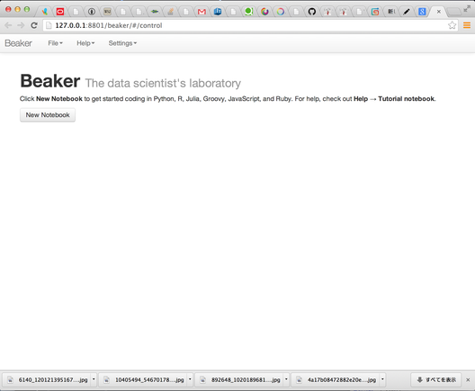
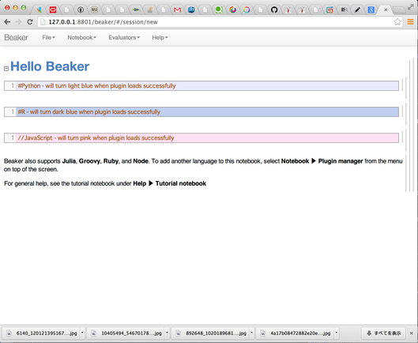
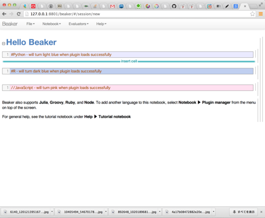
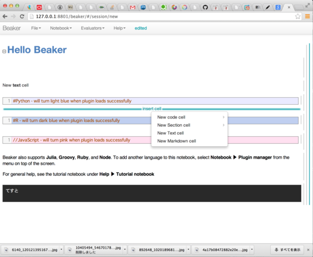
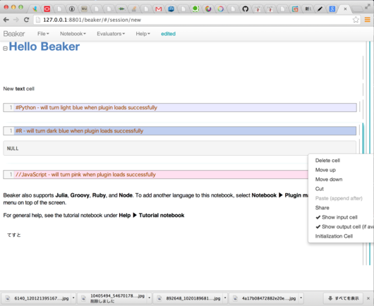

Beaker Notebookを触ってみた
The data scientist’s laboratory Beaker を触ったみたので、メモ。
Beaker NoteBook は、要するにWebベースのドキュメントツール/メモツールですが、 内部に Markdown や Latex、 Python や R などのコードを埋め込んで、 実行・視覚化することができます。
また ブロック単位のロック等の機能もあります。 Markdown と各種コードを混在できるので、ちょっとしたコード片を共有したりするのに便利そうですね。
ちなみに編集対象のファイルはサーバー上のローカルファイルで、Json形式になっていて、 ワンクリックで Gist に投稿できたりします。
インストール
github のプロジェクトページの通りにすれば基本的に動きます。
Mac w/ brew の例ですと
- Java (>= 1.7) をインストール
- XCode をインストール
- Gradle NPM Nginx のインストール
brew install gradle npm
brew install nginx --with-debug
- Python 関係のインストール(pip が入っている前提)
pip install ipython pyzmq
- その他、R や Latex など、必要なものをインストール
- github より beaker のソースコードを取得
git clone https://github.com/twosigma/beaker-notebook.git
ビルドと起動
cd beaker-notebook/core/config/builds/dev/
gradle run
これでサーバーが起動して、ブラウザも開きます。
使ってみる
何はともあれ新規ファイル作成
New Notebook をクリックしてみましょう。
親近のノートが作られます。 初期設定では、下図のようなデフォルトテンプレートが表示されるように成っています。
Cellを追加する
ノートブックは Cell と呼ばれるブロック集まってできていて、それは画面右側の縦線で表現されています。
cell を追加するには、追加したい場所の直前の Cell の下側にポインタをあて、クリックします。 すると、メニューが現れ、好きな種類の Cell を選ぶことができます。
 書き込む
適当なCellを選択すれば、書き込むことができます。ちなみに、書き込みを Lock する機能もあります。
コードを実行する
実行したいコードのある Cell にカーソルを合わせ、`Shift + Enter ` で実行することができます。 実行結果はあくまで評価値であって、標準出力ではないことに注意しましょう。
Cell を削除
該当 Cell の右端をクリックすると、 Delete cell を選ぶことができます。
困ったこと
単に触って間もないからですが、
- Cell をすべて消したら、新規の cell の作りかたがわからなくなってしまいました。直前の Cell がないので。
- 冒頭でもちょろっと書いたのですが、 Notebook > Publish to web をクリックすると、Gistに公開されてしまってあせりました。
まとめ
良いところも沢山あるのですが、UIが若干直感的でない気がします。 あと、データサイエンティストの実験室、というのであれば、データも含めて管理したいですよね。。。
コードの共有は個人的には Gist で間に合ってしまっているし、 使い勝手がこなれてくるまでは様子見かなぁ。